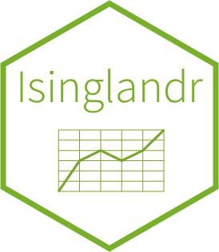

Package index
-
MDDConnectivityMDDThresholds - Estimation data for the Ising network of major depressive disorder
-
autolayer(<stability_2d_Isingland>) - Get ggplot2 layers of stability metrics to add to the landscape plots
-
calculate_barrier(<2d_Isingland>)calculate_barrier(<2d_Isingland_matrix>)print(<barrier_2d_Isingland>)summary(<barrier_2d_Isingland>)summary(<barrier_2d_Isingland_matrix>) - Calculate energy barrier for Ising landscapes
-
calculate_stability() - Calculate the stability metrics for Ising landscapes
-
calculate_stability_se()print(<stability_se>)compare_stability() - Calculate the standard error, confidence interval, and p-value for the stability metrics of an Ising landscape using bootstrapping
-
chain_simulate_Isingland()make_Ising_chain() - Make Ising chains from (a series of) Ising grid(s) and perform a chain simulation.
-
make_2d_Isingland() - Make a 2D landscape for an Ising network
-
make_2d_Isingland_matrix() - Make a matrix of landscapes for multiple Ising networks
-
make_3d_Isingland() - Make a 3D landscape for an Ising network
-
single_threshold()single_wei()all_thresholds()whole_weiadj()beta_list() - Control Functions to Specify the Varying Parameters for an Ising Grid.
-
make_Ising_grid() - Make a Grid to Specify Multiple Ising Networks
-
shiny_Isingland_MDD() - A shiny app that shows the landscape for the Ising network of major depressive disorder
-
simulate_Isingland() - Simulate a 2D Ising landscape